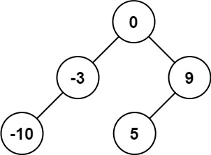
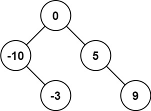
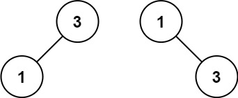

108. 将有序数组转换为二叉搜索树
有序数组取中点当根，左右两半递归；中点既是 BST 分裂点又把元素对半分，天然平衡。
思路
- 平衡 ⇔ 每次对半分；BST ⇔ 根左子树全小、右子树全大——升序数组的中点恰好同时满足。
- 递归
build(lo, hi)：mid = (lo + hi) / 2当根，[lo, mid-1]建左子树、[mid+1, hi]建右子树。 lo > hi返回 null；因为两半长度最多差 1，整棵树高度差 ≤ 1。
图解
最优解
1class Solution {2 public TreeNode sortedArrayToBST(int[] nums) {3 return build(nums, 0, nums.length - 1);4 }5 6 // [lo,hi] 取中点当根，左右两半递归；中点即 BST 的分裂点，两半均分 → 天然平衡7 private TreeNode build(int[] nums, int lo, int hi) {8 if (lo > hi) return null;9 int mid = (lo + hi) >>> 1;10 TreeNode root = new TreeNode(nums[mid]);11 root.left = build(nums, lo, mid - 1);12 root.right = build(nums, mid + 1, hi);13 return root;14 }15}题目
给你一个整数数组 nums ，其中元素已经按 升序 排列，请你将其转换为一棵 平衡 二叉搜索树。
示例 1：

输入：nums = [-10,-3,0,5,9] 输出：[0,-3,9,-10,null,5] 解释：[0,-10,5,null,-3,null,9] 也将被视为正确答案：
示例 2：

输入：nums = [1,3] 输出：[3,1] 解释：[1,null,3] 和 [3,1] 都是高度平衡二叉搜索树。
提示：
1 <= nums.length <= 104-104 <= nums[i] <= 104nums按 严格递增 顺序排列
题面取自力扣当前版本。
数据快照 2026-11-04。题面版权归力扣所有，本站点仅供本人学习使用，请勿对外发布。